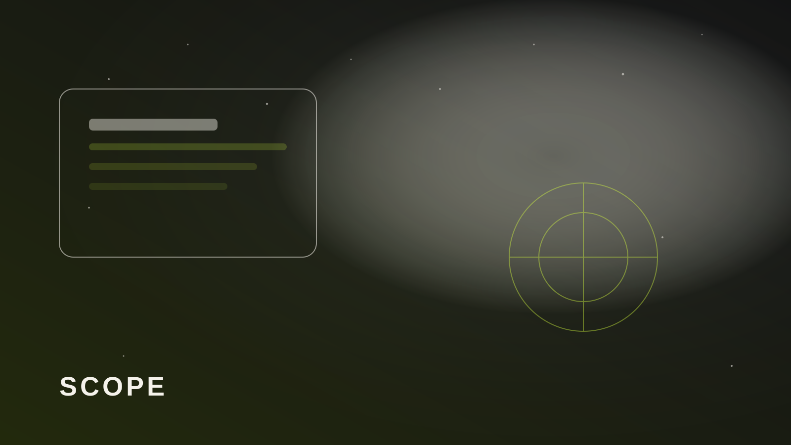

MVP — не половина большой системы
MVP — сценарий, за который клиент готов платить или которым команда реально пользуется каждый день. Обычно это одно действие: оставить заявку, оформить заказ, увидеть статус. Всё «на будущее» уходит в бэклог.
Если РІ первый СЃРїСЂРёРЅС‚ РІС…РѕРґСЏС‚ Рё каталог, Рё личный кабинет, Рё сложная аналитика — это уже РЅРµ MVP. Рто сжатый «большой продукт», который сорвёт СЃСЂРѕРєРё.

Как резать scope без вреда
- Один главный сценарий пользователя — и только вокруг него UI.
- Рнтеграции: РјРёРЅРёРјСѓРј для сигнала (Telegram/почта), остальное после живых данных.
- Админка: достаточно править контент вручную первые две недели.
- Дизайн-система: токены и сетка, без бесконечных вариаций карточек.
Срок 4–6 недель — когда реалистичен
РљРѕРіРґР° цель ясная, контент готов вовремя, решений меньше десяти. Р РєРѕРіРґР° команда РЅРµ переписывает Р±СЂРёС„ каждую неделю. Рначе СЃСЂРѕРє плавает, Р° бюджет СѓС…РѕРґРёС‚ РЅР° обсуждения.